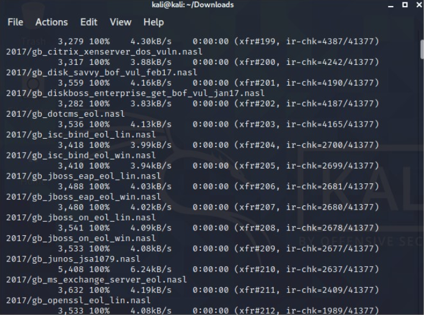
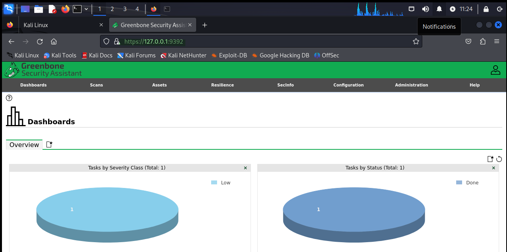

Instalación de OpenVas
En esta entrada, vamos a ver como podemos instalar OpenVas. OpenVAS (Open Vulnerability Assessment System) es una plataforma de escaneo de vulnerabilidades de código abierto diseñada para ayudar en la detección y gestión de vulnerabilidades en sistemas informáticos. OpenVAS es una alternativa gratuita a otras herramientas comerciales de escaneo de vulnerabilidades.
1. Actualizar la paqueteria e instalar paquetes necesarios
El primer paso, como en la mayoría de instalaciones, será actualizar la paquetería del sistemas para contar con las últimas versiones de los paquetes. Esto lo haremos ejecutando un:
sudo apt update && sudo apt upgrade
Una vez hecho esto, podremos instalar gvm y ufw:
sudo apt install gvm
sudo apt install ufw
2. Configuración de OpenVas
Posteriormente a estas instalaciones, podremos comenzar con la configuración de OpenVas, en primer lugar ejecutaremos un sudo gvm-setup, esto iniciará la descarga de todas las firmas que utiliza OpenVas para el escaneo de vulnerabilidades:

3. Habilitar los puertos y permitir acceso
Cuando el proceso anterior haya terminado podremos pasar al siguiente paso, el cual se trata de habilitar los puertos que usará OpenVas para el acceso. Para esto ejecutaremos los comandos:
sudo ufw enablesudo ufw allow 80sudo ufw allow 9392
4. Instalar el asistente GreenBone y acceder a la interfaz
Instalaremos Greenbone, el asistente gráfico de OpenVas.
sudo apt-get install -y greenbone-security-assistant
Una vez terminada la instalación confirmamos que GreenBone esta configurado y listo para usarse. Para ello podemos emplear el comando gvm-check-setup
Para acceder a OpenVas nos dirigiremos a nuestro navegador y escribiremos https://localhost:9392. Aquí escribiremos el usuario y la contraseña generados durante la configuración de gvm y finalmente tendremos acceso.

Con esto sería todo, espero que esta documentación le haya sido de ayuda.